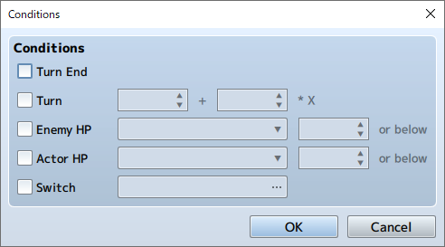

RPG MAKER MZ HELP
Database

Troop Settings
This Data's Role
Troops are the data for the groups of enemies that appear during gameplay. The enemies you have the player fight via map movement and command events are specified based on this data. Even when having the player fight against a single enemy, you must prepare data for a troop that has just the one enemy. "Battle Events" (event processing during battles) will also be set for each troop.
Parameter Details
Basic Settings
-
Name
The name of the troop. This property is only used in the editor and does not affect the game. By clicking the [Auto-name] button, a name will be automatically generated based on the enemies entered.
-
Change Battle Background
Change the battle background that will be displayed in the Placement View. In the displayed window, specify the background using the left field, and the image used for the ground in the right field. These settings are only used inside the editor and do not affect the game. They are shared when editing other data.
-
Battle Test
Run a test of a battle with the troop. Specify actors that will battle, equipment, and levels using the tabs labeled [1] through [4] in the window that is displayed. (Parameter values based on the settings will be displayed in the [Status] section.) A window will open and a battle will start when you click [OK]. The test will end when the window is closed.
*Please save edited data when you've set a plugin. When not saved, plugin settings will not be reflected in the battle test -
Placement View
The enemies that belong to the troop. It is possible to register up to 8 enemies (including those of the same type) in a single group.
You can change an enemy's position by dragging it in the Placement View. Additionally, when you right-click on an enemy in the Placement View and select [Appear Mid-Battle], the enemy will not appear until the execution of an [Enemy Appearance] Event Command in the Battle Events.
Use the buttons below to edit contents of the troop.- Add
- Add the enemy selected in the field on the right to the Placement View. You can also add by double-clicking an enemy in the list. The order in which the enemies were added will be reflected in the order of the enemy selection list displayed in battle.
- Delete
- Remove the enemy selected in the Placement View.
- Clear
- Delete all enemies in the Placement View.
- Align
- Re-align the positions of the enemies in the Placement View from left to right according to the order which they were entered.
Battle Event Parameters
Configure conditions and content of events run in battle with the troop in [Battle Event]. Just as with map events, it is possible to create a situational division of content to process using Event Page and appearance conditions.
-
Event Page Controls
You can control Event Pages using the [New Event Page], [Copy Event Page], [Paste Event page], and [Clear Event Page] buttons located on the left. The functions are the same as with map events.
-
Contents
Event processing when [Conditions] and [Span] are met is configured based on event commands. Editing is done in the same way as Map Events' [Contents].
-
Conditions
Conditions for the event pages. In the [Conditions] window that appears when the [...] button is pressed, enable the conditions from 5 settings below, and configure the decision criterion used for each. Unlike map events, if you do not specify any conditions for the battle events, the event page will not be run. Also, if the conditions of multiple event pages are met, the event page with the smallest number will used.
- Turn End
- The turn end will be used as a condition.
- Turn
- The number of turns that have passed from the start of battle will be used as a condition. Specify the number of turns from the start of battle in the field on the left and the interval between turns on the right.
- Enemy HP
- An enemy's HP falling below the specified amount will be used as a condition. Specify the enemy and the value (percentage of Max HP).
- Actor HP
- An actor's HP falling below the specified amount will be used as a condition. Specify the actor and the value (percentage of Max HP).
- Switch
- The specified switch being set to ON will be used as a condition.
-
Span
Specify the timing to start running an event when an event page is allowed to run.
- Battle
- Starts the event the first time conditions are met during a battle. Once it has been run once, it will not be run again.
- Turn
- Conditions will be checked each turn, and the event will be run if a condition is met.
- Moment
- The event will be run repeatedly while a condition is met. There are cases where a battle may not progress if event pages are not controlled with switches, so please beware.